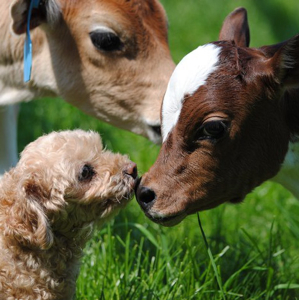

Benefits of a Vegan Diet

Thesedays topics related to health, the environment, money, crime, and happiness seem to dominate the news, which given the magnitude of their importance to our society and our individual selves, its not surprising that people can never seem to get enough information about them, so they can feel empowered and informed to improve their situation. But what if there was a way to solve all those problems with only one change in your life; would that be worth learning more about? I'd like to point out a few benefits of a vegan lifestyle in case it might be a suitable option for you and your family.

- Health
- On average, vegans live 10 years longer than non-vegans.
- Vegans have very low rates of chronic illnesses, such as cancer, heart disease, and diabetes.
- Read more about the health benefits of a vegan diet: 57 Health Benefits of Going Vegan
- Environment
- 1 pound of meat requires 16 pounds of grain and plant matter. If people ate the plant matter directly, there would be 94% (15/16) more land available for wildlife and natural habitats, or 94% more food available to feed the hungry.
- Methane, produced by the livestock industry traps 100 times more heat in the atmosphere than CO 2.
- The single biggest cause of the world's tropical rain forests, like in Brazil, is due to the livestock industry.
- Most fertilizers, herbicides, and insecticides are petro-based; requiring more oil refinement, and create significant imbalances in nearby rivers, lakes, and oceans.
- Read more about the environmental benefits of a vegan diet: Top 10 Reasons Why It's Green to Go Veggie
- Money
- The staple food of most vegans is beans and rice, which are significantly cheaper than meat.
- Vegans spend much less money on health care, due to much lower rates of illness and chronic disease.
- Most restaurants do a poor job of offering filling, nutritional, unprocessed vegan foods. This can be viewed as a negative, but also provides an opportunity to save more money by avoiding restaurants, which also typically have unhealthy levels of salt, saturated fats, preservatives, and harmful chemicals like MSG.
- New research suggests vegetarians can save at least $750 more than meat-eaters per year. Read more about the financial benefits of a vegan diet: Here’s How Much Money Vegetarians Save Each Year
- Crime
- Most vegans note that they feel much calmer and more peaceful after abstaining from meat. Many religions like Buddhims, Hinduism, and Jainism believe that the animal's spirit can potentially have negative influences on those who consume its body. Scientifically, it is has been proven that meat has unnaturally elevated levels of hormones due to the chemicals they are being injected with and that they live in stressful environments and are slaughtered in very cruel and fearful environments.
- Expirements on prison populations who switched to whole-food, vegan diets had significanlty lower levls of violence.
- Read more about how a vegan diet can reduce violence: Vegan Diet Helped Prisoners
- Happiness
- Having more money saved and improved health are two big factors in determining happiness.
- Not having the hormones of animals in our bodies allows us to get closer to our natural balanced nature.
- A vegan diet improves focus and clarity during meditation, which is a very helpful method for reducing stress.
- Living a cruelty-free life frees our conciense and reduces feelings of guilt and remorse about our contributing to the suffering of other animals, many of which have higher social, emotional and cognitive intelligence than the household pets we so dearly cherish.
- Read more about how a vegan diet leads to a happier life: Why Vegetarian Diet is Important for Spirituality and Meditation